29 septembre —
« La destruction d'avant départ »
Nuit : Paris (confirmé par Clément)
jour en ville ou de repos : pas de carte
Page de relecture : 41 cartes d'étape, 35 profils d'altitude et la vue d'ensemble, générés par
outils/cartes_fixes.py. Les jours en ville ou de repos n'ont pas de carte. Profils et dénivelés : tracé recalculé
(BRouter et modèle de terrain), pas des traces GPS enregistrées en 2011.
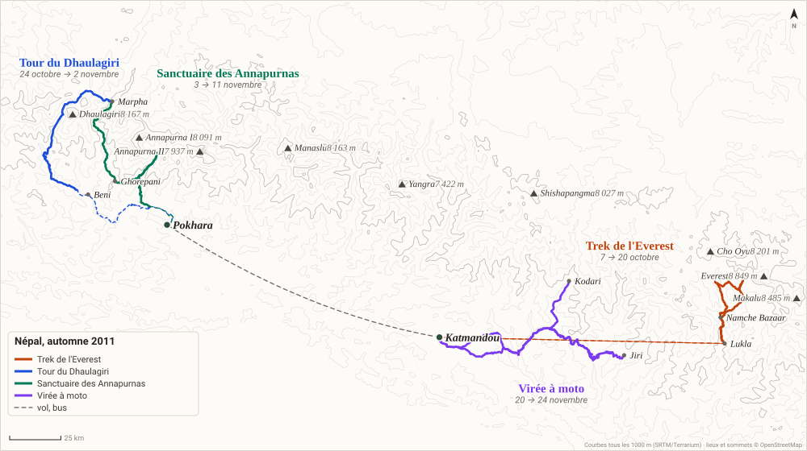
29 septembre —
Nuit : Paris (confirmé par Clément)
jour en ville ou de repos : pas de carte
30 septembre —
Nuit : Paris (confirmé par Clément)
jour en ville ou de repos : pas de carte
1 octobre veille
Nuit : Paris (confirmé par Clément)
jour en ville ou de repos : pas de carte
2 octobre —
Nuit : aéroport de Muscat, puis vol de nuit de 2 h 35
jour en ville ou de repos : pas de carte
3 octobre —
Nuit : guesthouse à Thamel (nom ?)
jour en ville ou de repos : pas de carte
4 octobre —
Nuit : même guesthouse, Thamel
jour en ville ou de repos : pas de carte
5 octobre —
Nuit : (déduit) Thamel
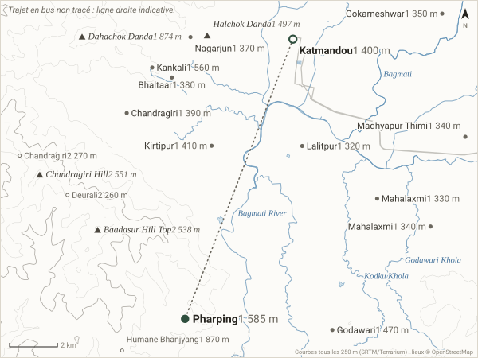
Contexte ajouté : Chandragiri Hill, Baadasur Hill Top, Dahachok Danda, Halchok Danda, Lalitpur, Godawari, Kirtipur, Chandragiri, Nagarjun, Gokarneshwar, Madhyapur Thimi, Mahalaxmi, Mahalaxmi, Kankali, Bhaltaar, Chandragiri, Deurali, Humane Bhanjyang
6 octobre veille du trek
Nuit : (déduit) Thamel
jour en ville ou de repos : pas de carte
7 octobre 1
Nuit : lodge, Phakding
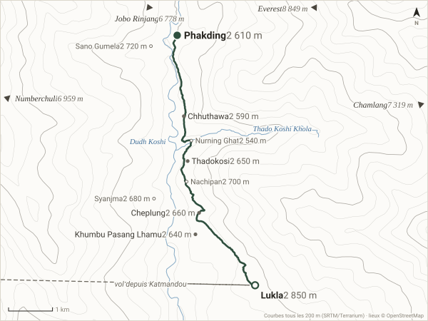
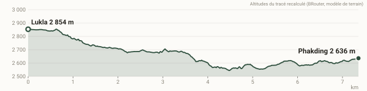
7,4 km · +114 m · −343 m · profil : départ 2 854 m, arrivée 2 636 m, point haut 2 854 m
Contexte ajouté : Khumbu Pasang Lhamu, Cheplung, Thadokosi, Chhuthawa, Sano Gumela, Nachipan, Syanjma, Nurning Ghat
8 octobre 2
Nuit : lodge, Namche
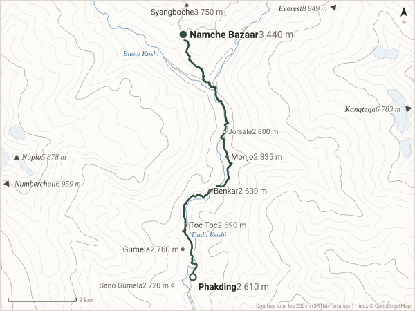
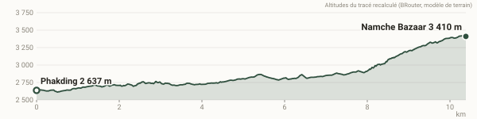
10,4 km · +909 m · −135 m · profil : départ 2 637 m, arrivée 3 410 m, point haut 3 422 m
Contexte ajouté : Nupla, Syangboche, Monjo, Gumela, Toc Toc, Benkar, Jorsale, Sano Gumela
9 octobre 3
Nuit : lodge, Namche
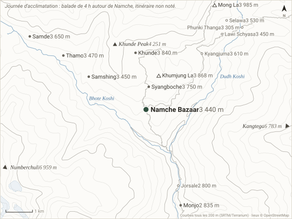
Contexte ajouté : Khunde Peak, Mong La, Khumjung La, Khunde, Syangboche, Samde, Thamo, Samshing, Monjo, Kyangjuma, Selawa, Lawi Schyasa, Phunki Thanga, Jorsale
10 octobre 4
Nuit : lodge, Khumjung
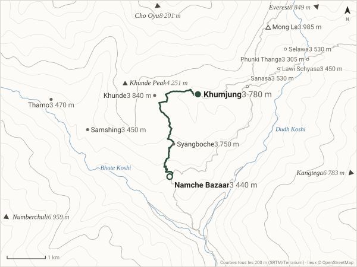
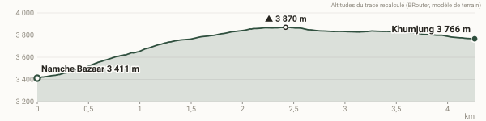
4,3 km · +440 m · −78 m · profil : départ 3 411 m, arrivée 3 766 m, point haut 3 870 m
Contexte ajouté : Khunde Peak, Mong La, Khunde, Syangboche, Thamo, Samshing, Sanasa, Selawa, Lawi Schyasa, Phunki Thanga
11 octobre 5
Nuit : Machhermo (lodge (déduit))
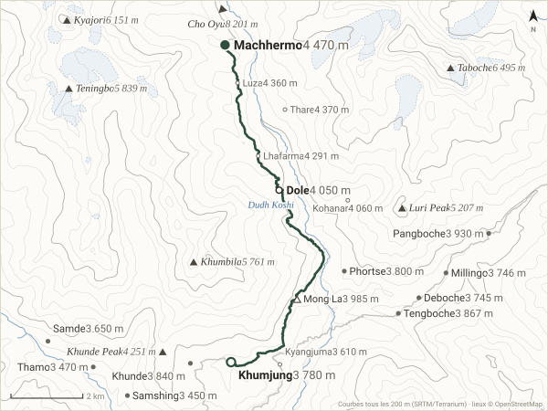
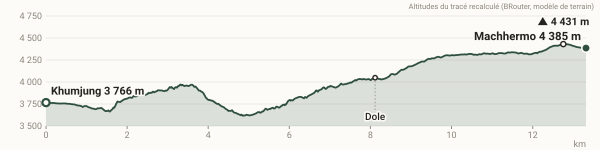
13,3 km · +1 080 m · −458 m · profil : départ 3 766 m, arrivée 4 385 m, point haut 4 431 m
Contexte ajouté : Taboche, Kyajori, Teningbo, Khumbila, Luri Peak, Khunde Peak, Mong La, Pangboche, Tengboche, Khunde, Phortse, Millingo, Deboche, Samde, Thamo, Samshing, Thare, Luza, Lhafarma, Kohanar, Kyangjuma
12 octobre 6
Nuit : lodge, Gokyo
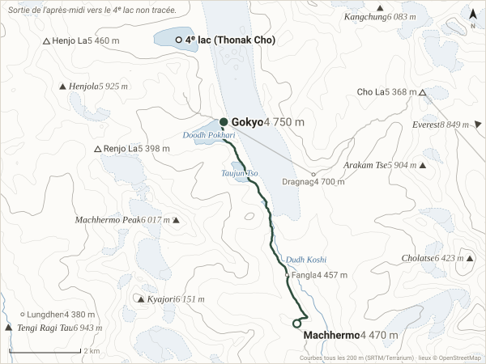
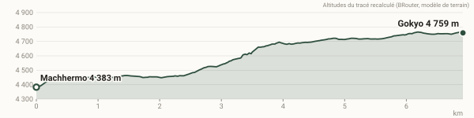
6,9 km · +370 m · −0 m · profil : départ 4 383 m, arrivée 4 759 m, point haut 4 765 m
Contexte ajouté : Cholatse, Kyajori, Kangchung, Machhermo Peak, Henjola, Arakam Tse, Henjo La, Renjo La, Cho La, Dragnag, Fangla, Lungdhen
13 octobre 7
Nuit : lodge, Gokyo
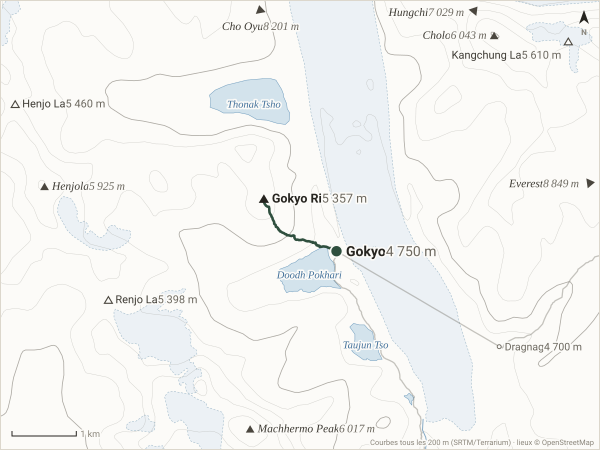
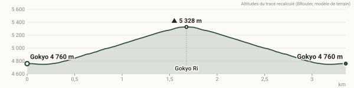
3,4 km · +558 m · −557 m · profil : départ 4 760 m, arrivée 4 760 m, point haut 5 328 m
Contexte ajouté : Cholo, Machhermo Peak, Henjola, Kangchung La, Henjo La, Renjo La, Dragnag
14 octobre 8
Nuit : Thagnak (lodge (déduit))
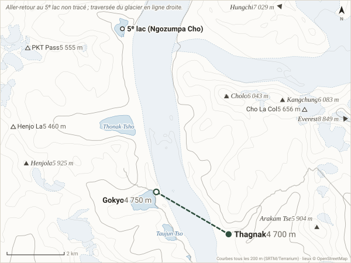
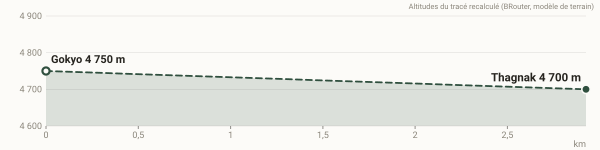
2,9 km · +0 m · −45 m · en partie en ligne droite · profil : départ 4 750 m, arrivée 4 700 m, point haut 4 750 m
Contexte ajouté : Kangchung, Cholo, Henjola, Arakam Tse, Cho La Col, PKT Pass, Henjo La
15 octobre 9
Nuit : hôtel, Lobuche (18 $, offerte par les Suisses)
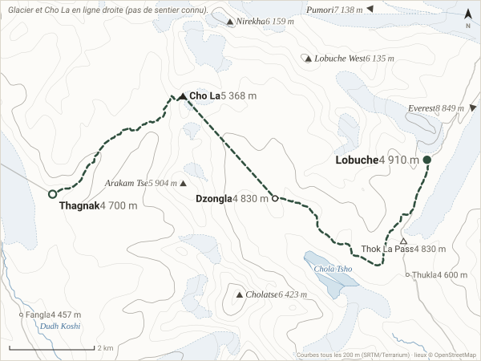
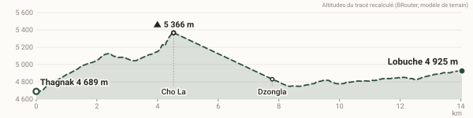
14,0 km · +919 m · −686 m · en partie en ligne droite · profil : départ 4 689 m, arrivée 4 925 m, point haut 5 366 m
Contexte ajouté : Cholatse, Nirekha, Lobuche West, Arakam Tse, Thok La Pass, Thukla, Fangla
16 octobre 10
Nuit : sous tente (vieille canadienne), Gorak Shep
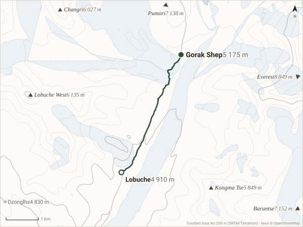
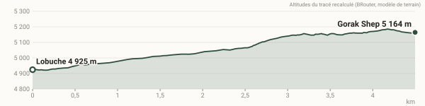
4,5 km · +249 m · −0 m · profil : départ 4 925 m, arrivée 5 164 m, point haut 5 186 m
Contexte ajouté : Lobuche West, Changri, Kongma Tse, Dzonglha
17 octobre 11
Nuit : Dingboche (lodge (déduit))
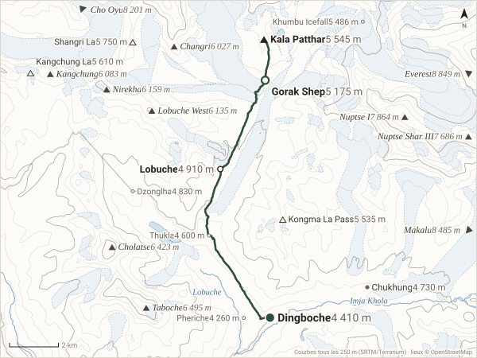
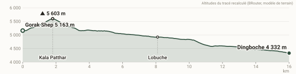
16,0 km · +429 m · −1 254 m · profil : départ 5 163 m, arrivée 4 332 m, point haut 5 603 m
Contexte ajouté : Nuptse I, Nuptse Shar III, Taboche, Cholatse, Nirekha, Lobuche West, Kangchung, Changri, Shangri La, Kangchung La, Kongma La Pass, Chukhung, Khumbu Icefall, Dzonglha, Thukla, Pheriche
18 octobre 12
Nuit : Namche (lodge (déduit))
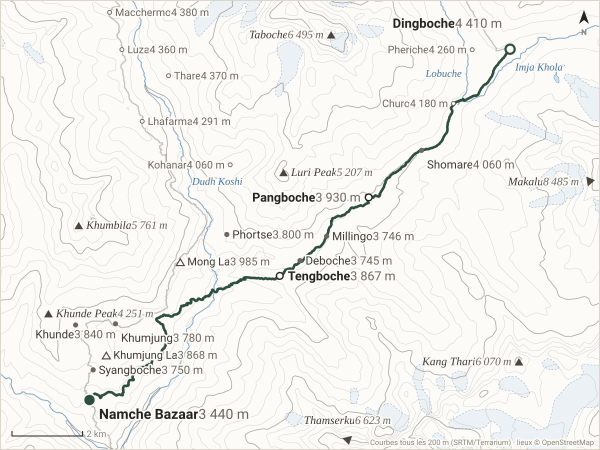
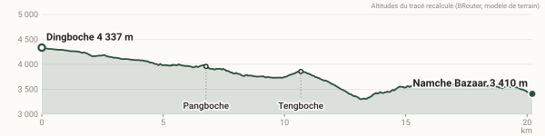
20,2 km · +483 m · −1 395 m · profil : départ 4 337 m, arrivée 3 410 m, point haut 4 337 m
Contexte ajouté : Taboche, Kang Thari, Khumbila, Luri Peak, Khunde Peak, Mong La, Khumjung La, Shomare, Khunde, Phortse, Khumjung, Syangboche, Millingo, Deboche, Macchermo, Thare, Luza, Lhafarma, Pheriche, Churo, Kohanar
19 octobre 13
Nuit : Lukla (lodge (déduit))
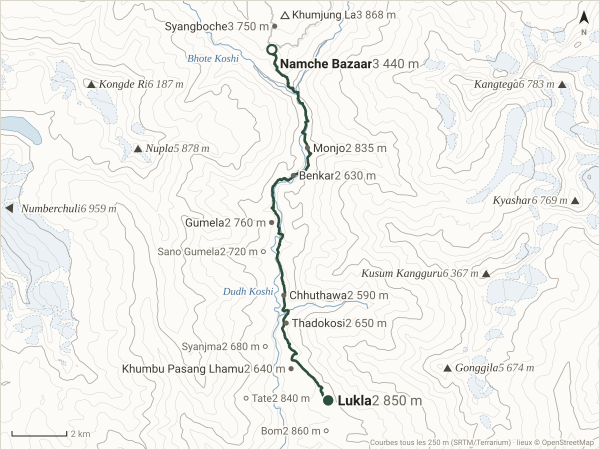
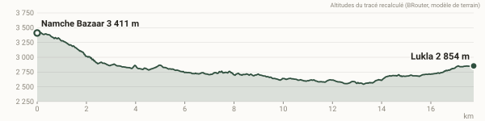
17,7 km · +547 m · −1 110 m · profil : départ 3 411 m, arrivée 2 854 m, point haut 3 422 m
Contexte ajouté : Kangtega, Kyashar, Kusum Kangguru, Kongde Ri, Nupla, Gonggila, Khumjung La, Khumbu Pasang Lhamu, Syangboche, Monjo, Gumela, Thadokosi, Benkar, Chhuthawa, Bom, Tate, Sano Gumela, Syanjma
20 octobre 14
Nuit : Moon Stay Lodge, Freak Street (2 €)
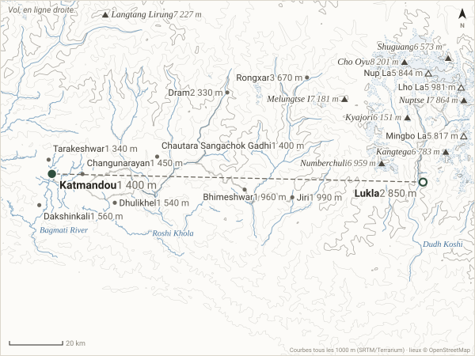
Contexte ajouté : Cho Oyu, Nuptse I, Langtang Lirung, Melungtse I, Numberchuli, Kangtega, Shuguang, Kyajori, Lho La, Nup La, Mingbo La, Dhulikhel, Rongxar, Dram, Jiri, Bhimeshwar, Dakshinkali, Changunarayan, Chautara Sangachok Gadhi, Tarakeshwar
21 octobre —
Nuit : (déduit) « l'hôtel », sans doute le Moon Stay
jour en ville ou de repos : pas de carte
22 octobre —
Nuit : (déduit) même hôtel
jour en ville ou de repos : pas de carte
23 octobre —
Nuit : hôtel à Pokhara, chambre double à trois avec Elizabeth (nom ?)

Contexte ajouté : Himachuli, Yangra, Mardi Himal, Lari, Phulchoki, Shivapuri Peak, Baadasur Hill Top, Liglig, Pangsang Pass, Ghorka Darbar Pass, Badh bhanjyang, Khairenitar, Bharatpur, Shankharapur, Nagarjun, Laxmi BaZaar, Besisahar, Nilakantha, Kotre, Palungtar Bazar
24 octobre 0
Nuit : hôtel familial, Beni (250 Rps)

Contexte ajouté : Muldai, Mohare Danda, Deurali Pass, Nakako Bisauné, 3380, Baglung, Kusma, Ghorepani, Tikot, Bhukatangle, Swanta, Chhomrong, Lespar, Panchase Bhanjyang
25 octobre 1
Nuit : lodge, Darbang (200 Rp)


24,3 km · +960 m · −773 m · profil : départ 852 m, arrivée 1 099 m, point haut 1 449 m
Contexte ajouté : Malka Pahad, Galeshwar, Bairagi Tol, Jhin
26 octobre 2
Nuit : chez l'habitant, Muri (700 Rps)


20,6 km · +1 438 m · −660 m · profil : départ 1 099 m, arrivée 1 866 m, point haut 1 912 m
Contexte ajouté : Jugja Pahad, Malka Pahad, Phaliyagaon, Khaban, Dar, Sibang
27 octobre 3
Nuit : grenier, chez l'habitant, Boghara


10,1 km · +794 m · −641 m · profil : départ 1 866 m, arrivée 2 005 m, point haut 2 099 m
Contexte ajouté : Barun Dhuri, Naura
28 octobre 4
Nuit : cabane, Choriban


16,4 km · +1 648 m · −189 m · en partie en ligne droite · profil : départ 2 018 m, arrivée 3 481 m, point haut 3 481 m
Contexte ajouté : Dhaulagiri, Konabon Peak, Tsaurabong Peak, Manapathi East, Jirbang, Malbas
29 octobre 5
Nuit : sous tente (leur tente, 1ʳᵉ fois), camp des Italiens


1,3 km · +101 m · −0 m · profil : départ 3 478 m, arrivée 3 597 m, point haut 3 597 m
Contexte ajouté : Sallaghari
30 octobre 6
Nuit : sous tente, Glacier Camp


6,9 km · +624 m · −48 m · profil : départ 3 597 m, arrivée 4 182 m, point haut 4 182 m
Contexte ajouté : Dhaulagiri
31 octobre 7
Nuit : sous tente, camp de base


5,2 km · +477 m · −0 m · profil : départ 4 182 m, arrivée 4 661 m, point haut 4 661 m
1 novembre 8
Nuit : sous tente, Hidden Valley


8,8 km · +691 m · −249 m · profil : départ 4 661 m, arrivée 5 090 m, point haut 5 358 m
Contexte ajouté : Tukuche Peak, Sita Chuchura
2 novembre 9
Nuit : lodge, Marpha


18,3 km · +203 m · −2 596 m · profil : départ 5 091 m, arrivée 2 697 m, point haut 5 272 m
Contexte ajouté : Tukuche Peak, Sechi Lek, Alu Bari, Dhonga, Chhairo
3 novembre 10
Nuit : hôtel, Kalopani (100 Rps)
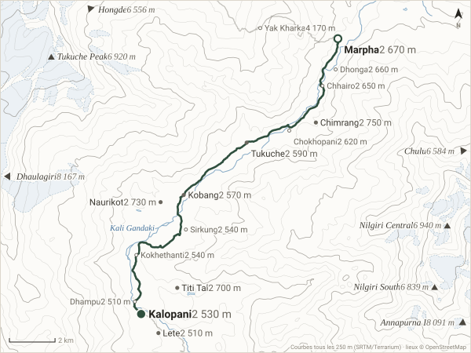
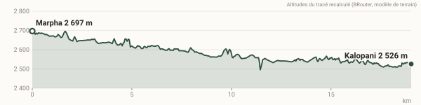
19,0 km · +87 m · −256 m · profil : départ 2 697 m, arrivée 2 526 m, point haut 2 697 m
Contexte ajouté : Nilgiri Central, Tukuche Peak, Nilgiri South, Chimrang, Naurikot, Titi Tal, Tukuche, Kobang, Lete, Yak Kharka, Dhonga, Chhairo, Chokhopani, Sirkung, Kokhethanti, Dhampu
4 novembre 11
Nuit : chambre, Tatopani
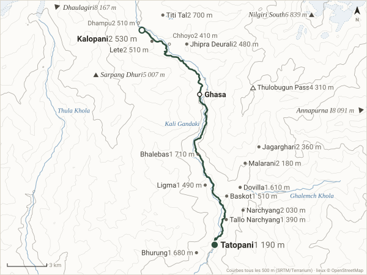
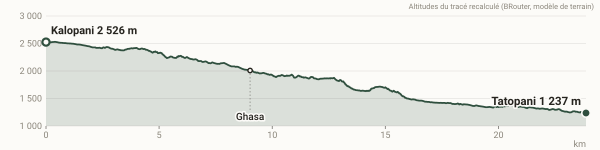
23,9 km · +230 m · −1 511 m · profil : départ 2 526 m, arrivée 1 237 m, point haut 2 530 m
Contexte ajouté : Nilgiri South, Sarpang Dhuri, Thulobugun Pass, Titi Tal, Lete, Jhipra Deurali, Jagarghari, Malarani, Narchyang, Bhalebas, Bhurung, Dovilla, Baskot, Ligma, Tallo Narchyang, Dhampu, Chhoyo
5 novembre 12
Nuit : lodge, Ghorepani (100 Rps)
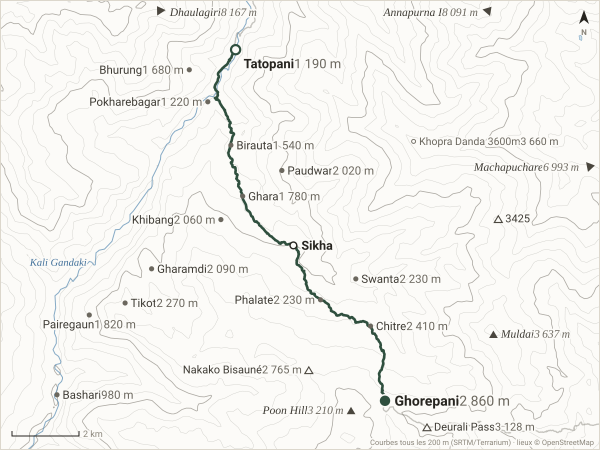
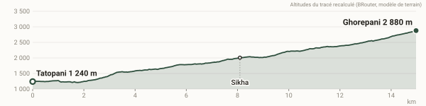
15,0 km · +1 673 m · −53 m · profil : départ 1 240 m, arrivée 2 880 m, point haut 2 880 m
Contexte ajouté : Muldai, Poon Hill, Deurali Pass, Nakako Bisauné, 3425, Chitre, Tikot, Swanta, Phalate, Gharamdi, Khibang, Paudwar, Pairegaun, Ghara, Bhurung, Birauta, Pokharebagar, Bashari, Khopra Danda 3600m
6 novembre 13
Nuit : chambre sommaire, lodge, Tadapani
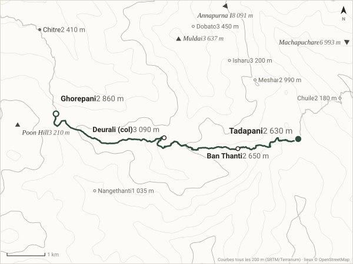
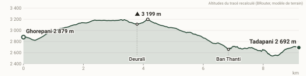
9,2 km · +623 m · −797 m · profil : départ 2 879 m, arrivée 2 692 m, point haut 3 199 m
Contexte ajouté : Muldai, Poon Hill, Chitre, Dobato, Isharu, Meshar, Chuile, Nangethanti
7 novembre 14
Nuit : lodge, Sinuwa haut (100 Rps)
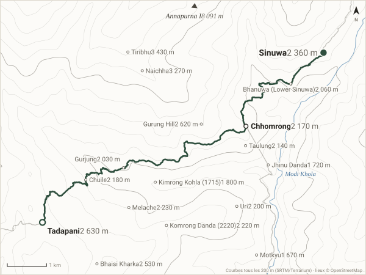
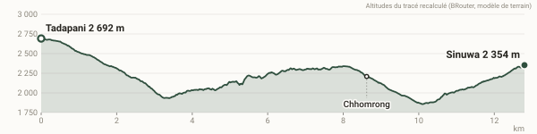
12,8 km · +916 m · −1 254 m · profil : départ 2 692 m, arrivée 2 354 m, point haut 2 692 m
Contexte ajouté : Tiribhu, Naichha, Gurung Hill, Bhaisi Kharka, Melache, Komrong Danda (2220), Uri, Chuile, Taulung, Bhanuwa (Lower Sinuwa), Gurjung, Kimrong Kohla (1715), Jhinu Danda, Motkyu
8 novembre 15
Nuit : sous une tente louée à un lodge, MBC
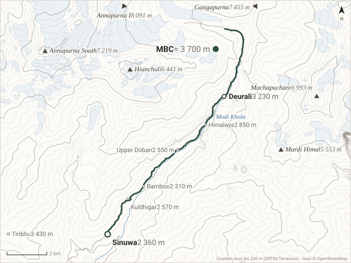
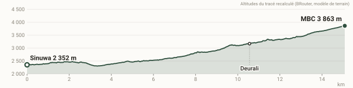
15,1 km · +1 745 m · −248 m · profil : départ 2 352 m, arrivée 3 863 m, point haut 3 863 m
Contexte ajouté : Annapurna South, Machapuchare, Hiunchuli, Mardi Himal, Tiribhu, Himalaya, Kuldhigar, Upper Doban, Bamboo
9 novembre 16
Nuit : même lodge, même chambre, Sinuwa haut
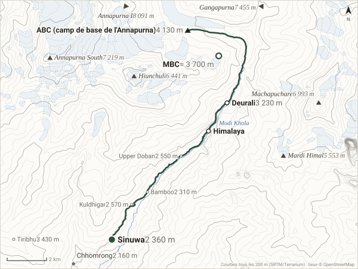
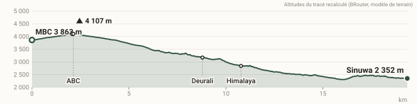
19,3 km · +476 m · −1 982 m · profil : départ 3 863 m, arrivée 2 352 m, point haut 4 107 m
Contexte ajouté : Annapurna South, Machapuchare, Hiunchuli, Mardi Himal, Chhomrong, Tiribhu, Kuldhigar, Upper Doban, Bamboo
10 novembre 17
Nuit : lodge, Landruk
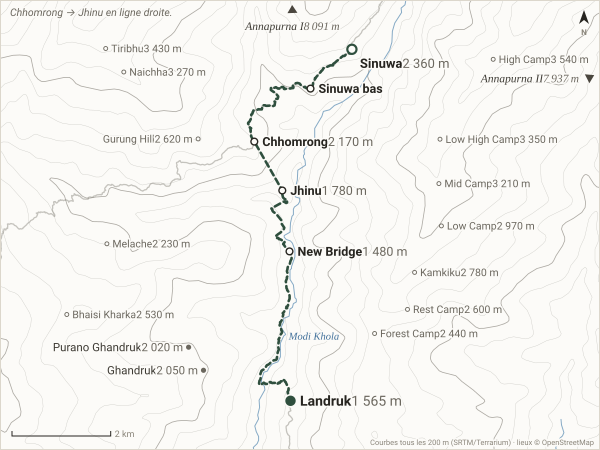
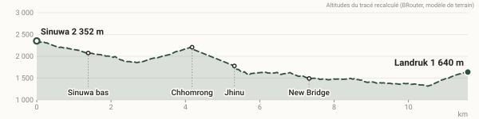
11,6 km · +680 m · −1 406 m · en partie en ligne droite · profil : départ 2 352 m, arrivée 1 640 m, point haut 2 352 m
Contexte ajouté : Ghandruk, Purano Ghandruk, High Camp, Tiribhu, Low High Camp, Naichha, Mid Camp, Low Camp, Kamkiku, Gurung Hill, Rest Camp, Bhaisi Kharka, Forest Camp, Melache
11 novembre 18
Nuit : chambre à 200 Rps (3 lits), Pokhara
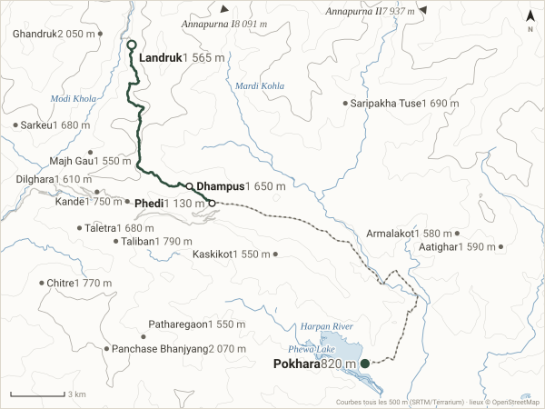
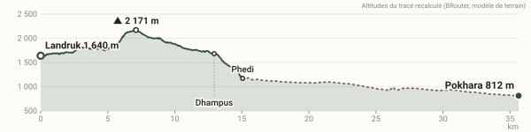
35,7 km · +632 m · −1 096 m · profil : départ 1 640 m, arrivée 812 m, point haut 2 171 m
Contexte ajouté : Panchase Bhanjyang, Ghandruk, Taliban, Chitre, Kande, Saripakha Tuse, Sarkeu, Taletra, Dilghara, Aatighar, Armalakot, Kaskikot, Patharegaon, Majh Gau
12 novembre Pokhara 1
Nuit : (déduit) même chambre
jour en ville ou de repos : pas de carte
13 novembre Pokhara 2
Nuit : (déduit) même chambre
jour en ville ou de repos : pas de carte
14 novembre Pokhara 3
Nuit : (déduit) même chambre
jour en ville ou de repos : pas de carte
15 novembre Pokhara 4
Nuit : (déduit) même chambre (« l'hôtel »)
jour en ville ou de repos : pas de carte
16 novembre Pokhara 5
Nuit : (déduit) même chambre
jour en ville ou de repos : pas de carte
17 novembre Pokhara 6
Nuit : (déduit) même chambre
jour en ville ou de repos : pas de carte
18 novembre Katmandou 1
Nuit : hôtel près de Freak Street, chambre avec salle de bain (350 Rps, nom ?)
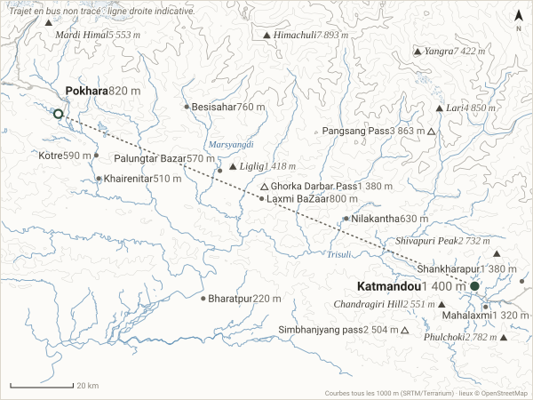
Contexte ajouté : Himachuli, Yangra, Mardi Himal, Lari, Phulchoki, Shivapuri Peak, Chandragiri Hill, Liglig, Pangsang Pass, Simbhanjyang pass, Ghorka Darbar Pass, Khairenitar, Bharatpur, Shankharapur, Mahalaxmi, Laxmi BaZaar, Besisahar, Nilakantha, Kotre, Palungtar Bazar
19 novembre Katmandou 2
Nuit : (déduit) même hôtel (« arriver à Freak Street »)
jour en ville ou de repos : pas de carte
20 novembre Moto 1
Nuit : bivouac sur une plage de sable blanc (lieu exact (déduit))
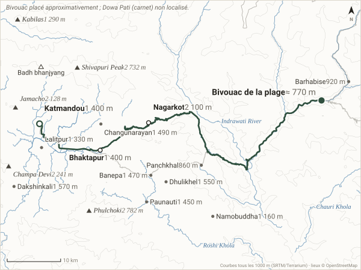
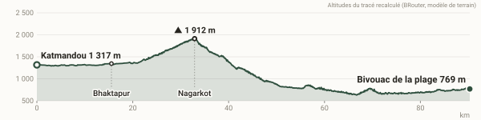
90,3 km · +1 189 m · −1 733 m · profil : départ 1 317 m, arrivée 769 m, point haut 1 912 m
Contexte ajouté : Phulchoki, Shivapuri Peak, Champa Devi, Jamacho, Kabilas, Badh bhanjyang, Dhulikhel, Lalitpur, Dakshinkali, Changunarayan, Banepa, Paunauti, Namobuddha, Barhabise, Panchkhal
21 novembre Moto 2
Nuit : bivouac sur une crête de pins (lieu exact (déduit))
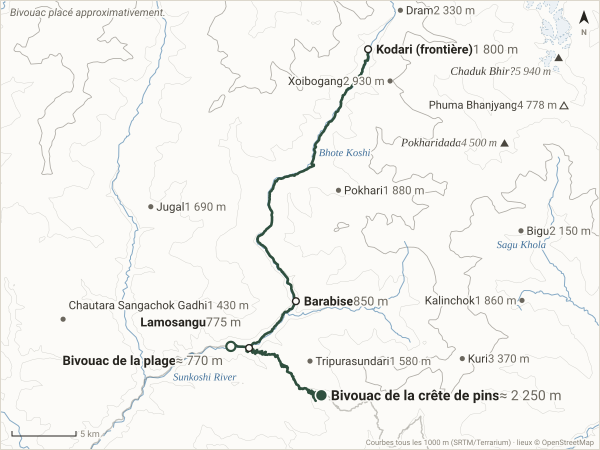
81,4 km · +3 229 m · −1 752 m · profil : départ 769 m, arrivée 2 264 m, point haut 2 264 m
Contexte ajouté : Chaduk Bhir?, Pokharidada, Phuma Bhanjyang, Dram, Chautara Sangachok Gadhi, Kuri, Xoibogang, Bigu, Pokhari, Kalinchok, Jugal, Tripurasundari
22 novembre Moto 3
Nuit : bivouac caché sur une terrasse de mousse (lieu exact (déduit))
53,5 km · +1 362 m · −2 081 m · profil : départ 2 251 m, arrivée 1 558 m, point haut 2 694 m
Contexte ajouté : Sailung, Baiteshwor, Kharidhunga, Mudhe, Makaiban, Khanidanda
23 novembre Moto 4
Nuit : (déduit) la crête de pins du 21/11 (le carnet dit « le camp d'hier soir »)
106,3 km · +4 286 m · −3 580 m · profil : départ 1 549 m, arrivée 2 250 m, point haut 2 694 m
Contexte ajouté : Sailung, Bhimeshwar, Barhabise, Kuri, Sailung, Kalinchok, Tripurasundari, Gaurishankar, Baiteshwor, Tamakoshi
24 novembre Moto 5
Nuit : Trekker's Paradise, Freak Street
95,6 km · +1 428 m · −2 360 m · profil : départ 2 251 m, arrivée 1 317 m, point haut 2 251 m
Contexte ajouté : Sailung, Phulchoki, Shivapuri Peak, Champa Devi, Nagarkot, Jamacho, Kabilas, Badh bhanjyang, Dhulikhel, Bhaktapur, Dakshinkali, Paunauti, Chautara Sangachok Gadhi, Shankharapur, Chandragiri, Budhanilkantha, Namobuddha
25 novembre KTM 1 · J-4
Nuit : (déduit) Trekker's Paradise
jour en ville ou de repos : pas de carte
26 novembre KTM 2 · J-3
Nuit : (déduit) Trekker's Paradise
jour en ville ou de repos : pas de carte
27 novembre KTM 3 · J-2
Nuit : (déduit) Trekker's Paradise
jour en ville ou de repos : pas de carte
28 novembre KTM 4 · J-1
Nuit : (déduit) Trekker's Paradise (la chambre est reprise par un Hollandais au départ)
jour en ville ou de repos : pas de carte
29 novembre départ
Nuit : ? vol retour, non raconté
jour en ville ou de repos : pas de carte